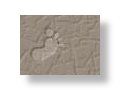
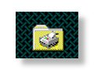

Last updated on August 07, 2010
News and Announcements
From MSC Lab. Computer Facilities Administrators.

Prof. Tomizuka's Courses
The list of the courses taught by Prof. Tomizuka. (Not Complete)

Information for New Members
- Email the following information to wjchen@me.berkeley.edu
- Full Name
- Email Address
- Personal Homepage (if you have)
- Office Location (eg. 2103EH)
- Research Area
- Two Personal Photos
- Duration of Stay in MSC Lab (for visitors)
- The Origin Institute that You Are From (for visitors)
You can refer to the People page to get the idea about what information we need.
Please read all sections of the Resources page of the lab's home page. This will clear many of your questions regarding using the facitlities here.
Please do not hesitate to email wjchen@me.berkeley.edu if you have any questions or problems.

Printing in the MSC Lab
- The MSC Lab has 1 printer:
- HP LaserJet 1320 Printer (Black and White)
The printer is located in 2103EH.
The printer is accessible from local lab network and also from global internet. Please email wjchen@me.berkeley.edu for the setup instruction to use the printers from your computer.
- For other printing needs (e.g., color printing), please check the facilities in 1167EH.

Network in the MSC Lab
The MSC Lab has setup the local wired network in 2103EH for everyone's convenience. Airbear is also available in 2103EH if your machine can support wireless.
- According to the Campus Security Policy, each computer is REQUIRED to install the anti-virus software and anti-spyware software. Please refer to the following links for the software:
- Software Central (Campus Licenses Software, including security tools)
http://software-central.berkeley.edu/ - Ad-Aware 2008 (Free Anti-Spyware Software)
http://lavasoft.com/products/ad_aware_free.php - Spybot Search and Destroy (Free Anti-Spyware Software)
http://www.safer-networking.org/en/home/index.html
Also, please perform the regular update and full scan of your own computer to make sure your machine is secured.
- Software Central (Campus Licenses Software, including security tools)
For security concerns, a daemon software is hosted on the local lab network to monitor the network activity through local network. Please be awared that, the software is only used to identify the specific computer that might cause some security issues.
According to the Campus Software Policy, please do NOT install the unauthorized software in the lab public desktop. Also, please make your personal files in the lab public desktop organized and clean.
MSC Lab. Computer & Network Administrators
All computer facilities (hardware & software) and the network in MSC laboratory are maintained by the following system administrator. Feel free to send an email to the system administrator if you have any problems or suggestions about the computer facilities and network. All pages in Resources section of MSC laboratory homepage are written by the system administrator.
Chen, Wenjie | Homepage | Email